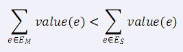

小 C 最近学了很多最小生成树的算法，Prim 算法、Kurskal 算法、消圈算法等等。 正当小 C 洋洋得意之时，小 P 又来泼小 C 冷水了。小 P 说，让小 C 求出一个无向图的次小生成树，而且这个次小生成树还得是严格次小的，也就是说： 如果最小生成树选择的边集是 EM，严格次小生成树选择的边集是 ES，那么需要满足：(value(e) 表示边 e的权值)  这下小 C 蒙了，他找到了你，希望你帮他解决这个问题。
| F.A.Qs | Home | Discuss | ProblemSet | Status | Ranklist | Contest | 入门OJ | ModifyUser Xeonacid | Logout | 捐赠本站 |
|---|